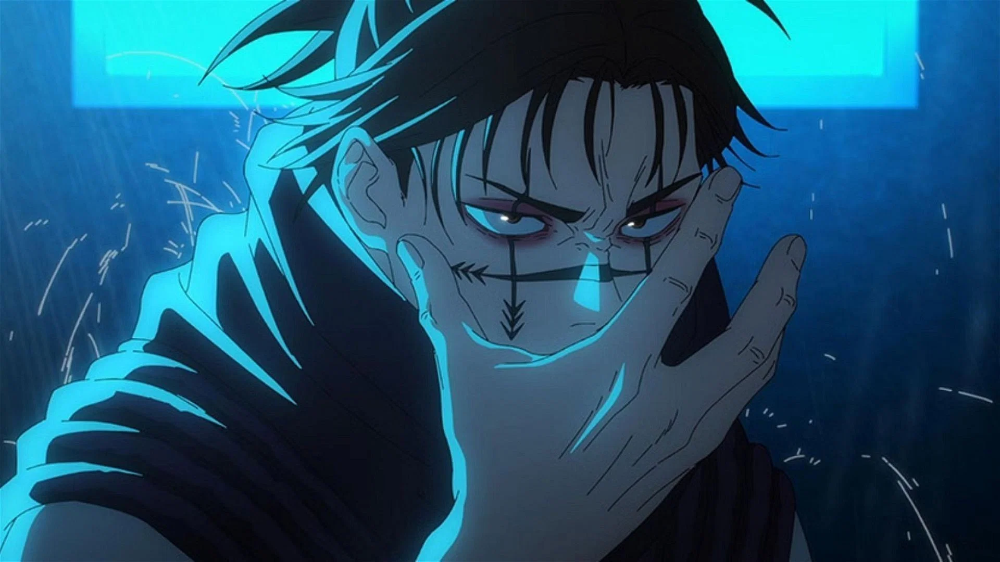

About Toji
Toji is a cool-headed and confident man who makes a living using his skills and does not sweat the small stuff.

Toji is a cool-headed and confident man who makes a living using his skills and does not sweat the small stuff.
Our Services
As a Death Painting Womb, Choso is a half-human, half-cursed spirit who has a flesh and blood body that is fully visible even to non-sorcerers.
Eren Yeager, the main protagonist of Attack On Titan, presents himself as a passionate, impulsive, and daring young man filled with rage against Titans, human devouring beings. His hatred was further fuelled by the memories of his mother eaten by a Titan right before his eyes.